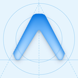

Coastal Forager
Where and when to go shellfishing in Washington State.
Free. Use it in your browser, or install it on Android for the home-screen widget.
Coastal Forager shows which public beaches are safe and in season for each species, and finds the next day when the tide is low enough during the hours you want to be out.
Guidance only. Before you harvest, check the DOH shellfish safety map or call the biotoxin hotline at 1-800-562-5632, and confirm the WDFW season.
What it does
- Today: the best beaches and species for today, rated Great, Good, Marginal or Poor.
- Beaches: every public beach with its safe-to-harvest status, open seasons and the species commonly found there.
- Next ideal day: the next date when the low tide is low enough and falls in your hours (daylight by default, or a custom range like 6pm–10pm).
- Alerts and widget: push alerts for good days at your favorite beaches, and a home-screen widget with today's best rating.
How a day is rated
- Gate. The WDFW season must be open, DOH must not have the species closed, and razor clams need an announced dig. Failing days show as Closed, never as a low score.
- Tide fit. Full marks at or below the species' ideal low tide, none at or above its marginal height, and in between linearly. You can override both per species.
- Window fit. The share of the harvest window around low tide that falls in your hours.
Score = tide fit × window fit. Great is 0.8 or more, Good 0.5, Marginal 0.2.
Where the data comes from
| Data | Source | Updated |
|---|---|---|
| Beaches, safe-to-harvest status, closures, clam and oyster seasons | WA Department of Health | Hourly |
| Tide predictions | NOAA CO-OPS | Daily |
| Razor clam dig days | WDFW | Daily |
| Species common on each beach | WDFW beach harvest profiles | Continuously, in batches |
| Sunrise and sunset | Computed in the app | n/a |
Install on Android
- On your phone, tap Download for Android.
- Open the downloaded
coastal-forager.apk. If Android asks, allow your browser to install unknown apps. - Tap Install. New versions install over the old one, so your favorites are kept.
This build isn't on the Play Store. Push alerts aren't switched on in it yet; the widget, background refresh and everything else work. Release notes
Built with
- Expo / React Native
- TypeScript
- Supabase
- Postgres + PostGIS
- Deno edge functions
- pg_cron
- GitHub Actions